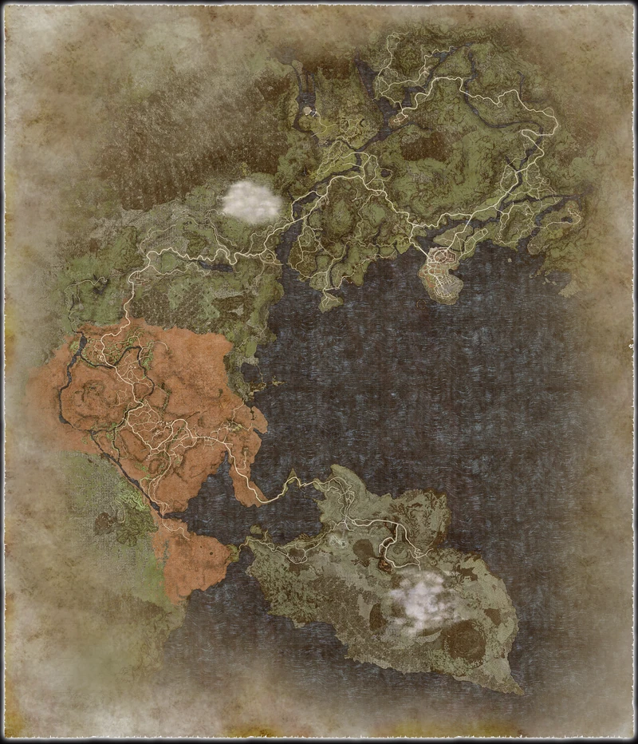

Dragon's Dogma II Companion
v1.1 • PS5 • spoilers aan
Repository: Teunuzzz/Dragons_Domga_II • kaart met echte klik-coördinaten + admin editor
⭐ OP Route
🗺️ 100% Map
🌐 Wiki-bronnen
Kaart reset
Admin
Fighter
Warrior
Thief
Archer
Mage
Sorcerer
Mystic Spearhand
Magick Archer
Trickster
Warfarer
Alle types
Nederzetting
Stad
Dungeon
Quest
Boss
Vocation
Collectible
Merchant
Camp
Endgame

🏘️ settlement
🏰 city
🕳️ dungeon
📜 quest
👹 boss
🧙 vocation
🪲 collectible
🛒 merchant
Sluiten